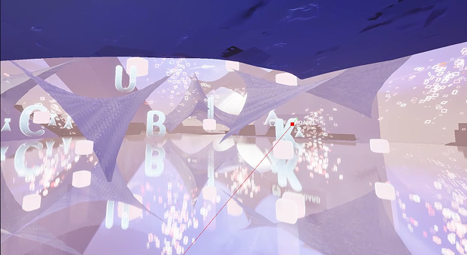
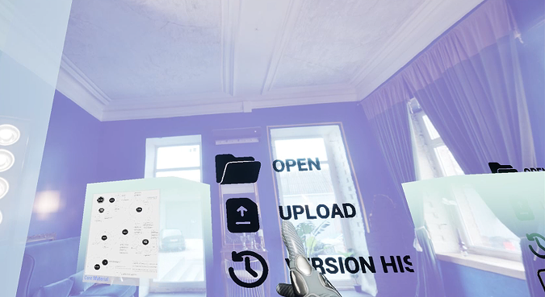
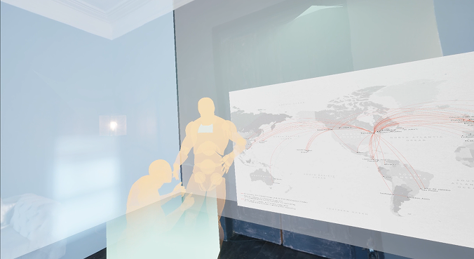
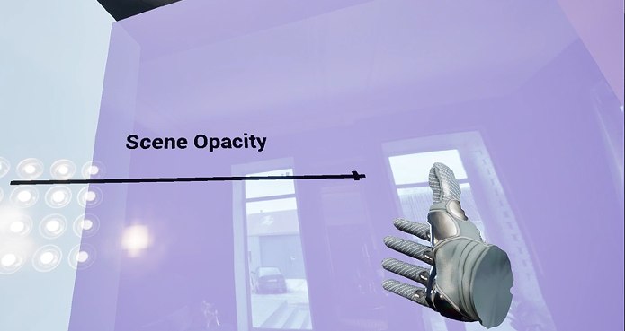

Concept
CUBIK reframes remote collaboration around personal space rather than shared space. Each user inhabits an autonomous cube; the six faces stand in for the modes work naturally moves through — home, focus, meeting, archive — and intentional handoffs replace synchronous interruption.
Problem & Context
As digital work became increasingly complex, a gap emerged: most file systems require thinking in abstract structures — folders, paths, permissions — rather than actions, places, or intentions. This gap became more apparent when work moved into VR, where users naturally orient themselves through space, movement, and bodily awareness, yet are forced to rely on interaction models designed for flat screens.
Market Context
- VR workplace market growing at 3× the rate of SaaS market, representing an early-stage, high-growth sector
- Microsoft Mesh announced retirement in December 2025 — signals enterprise VR maturity challenges remain
- ByteDance acquired Pico in 2021 for $775M, achieving 50%+ VR market share in China
- Most VR ventures by SaaS giants have faltered — the market needs a fundamentally different product premise
The Fragmentation Trap
- Context switching — work cannot proceed until others respond, meetings require everyone simultaneously online
- Synchronous dependency — collaboration means interrupting someone else's flow
- Collaboration fatigue — leaders exhaust themselves hosting meetings, managers make decisions based on outdated information
Research & Exploration
Two threads shaped the design premise: how existing tools handle heterogeneous content, and how spatial interfaces should actually look and feel once they leave the flat screen.
Case Study Insights
"Everything is a Block" — Notion's graph-based architecture treats all input as blocks, so different types of content can be easily combined.
— Notion Architecture Analysis
In XR/VR, "Flat Design" (abstract 2D icons) often leads to "click uncertainty." Users perform better with skeuomorphic interfaces that mimic real-world properties like weight, depth, and friction.
— Gloude et al. (2024)
Target User
- Persona: Creative Wei, 28, UX Designer, works remotely 3–4 days/week
- Existing toolchain: Figma, Notion, Slack, Zoom, Google Drive
- Goal: immersive creative flow and an organized workspace without constant context-switching
Intuitive organization using the cube's six faces as functional zones. File-within-cube storage creates a natural container metaphor. Immersive focus eliminates desktop distractions.
Spatial computing momentum is accelerating. Market gap between SaaS and VR creates an opening for a product that bridges both paradigms with genuine workflow utility.
Prototyping & Iteration
Built in Unreal Engine 5 with Meta Quest Link, CUBIK uses Blueprint visual scripting to create a gravity-adaptive file system where each face of the cube responds to the VR controller's orientation and the user's spatial position.
MAP variable type manages mapping relationships between controller angles and cube faces. Dynamically generated material instances are created for each of the six wall surfaces, stored uniformly in a Map variable for real-time modifications.
Uses sphere trace by object in VR Pawn. Sets up separate collision for the file cube. Casts the collided object to BP_InteractiveCube to trigger custom interaction. Uses Attach to Component to attach the cube to the right-hand handle.
Holographic menus are projected in real time onto each work surface, providing users with directional guidance. Bind event to menu action in level blueprint. Implement visibility of corresponding wall surface using a switch node.
Environment Construction
- Meta Quest Link connection — 6DOF tracking, low-latency video encoding/decoding, real-time synchronization
- OpenXR plugin enabled — significantly reduces latency and improves stereo-rendering efficiency
- Dynamic light spots — Time & Spatial Sync, World Space Noise Mask, Spot Extraction & Shaping
- Fluid particle system — Point Attraction Force simulates vital characteristics such as breathing in character models
- Background transition achieved through material properties and HDR map adjustments
Multi-User Presence
- Sphere collision for other users — creates visual feedback through material variation when users overlap
- Other users automatically face toward current user when proximity collision is detected
- BP_CyberTent controls rise and fall of spatial tent boundary via button events
- Planar reflection achieves reflection effects on the tent surface
- VR Pawn rotation based on normal of object hit — multiplied by -1 to set gravity direction
Where We Landed
A working Quest build where the six faces route Home, Workspace, Meeting, and Archive through 6DOF-tracked navigation, sphere-trace file grabbing, and holographic menus that project onto whichever surface is active.


Home Face · Open / Upload / Version History
Meeting Face · Multi-User Presentation
Holo Menu · Scene Opacity ControlThe fundamental unit shifted from "meeting room" to "exchange of spatial context" — collaboration without forced synchronization.
— Field Notes
Reflection
CUBIK started from a specific frustration — file systems built for flat screens don't map onto how bodies move through VR space. The gravity-adaptive cube tests whether a spatial container can replace folders wholesale, and it also surfaces where that metaphor strains: six faces cover the obvious modes cleanly, but real workflows rarely stay inside four categories, and orientation cues that feel natural to me may not generalize without testing beyond my own walkthroughs.
What Held Up
- Sphere-trace interaction plus Attach to Component felt reliable and low-friction once the collision setup was tuned
- The six-face metaphor gives a first-time user a default vocabulary they can guess at without instructions
- Gravity-based reorientation made "which face am I on" legible without extra UI
What I'd Push On Next
- Test with people outside the build, not just internal walkthroughs, to see if the face-mapping actually reads
- Add an overflow state for content that doesn't cleanly belong to one face
- Check comfort over longer sessions — gravity-based reorientation may disorient some users past a few minutes